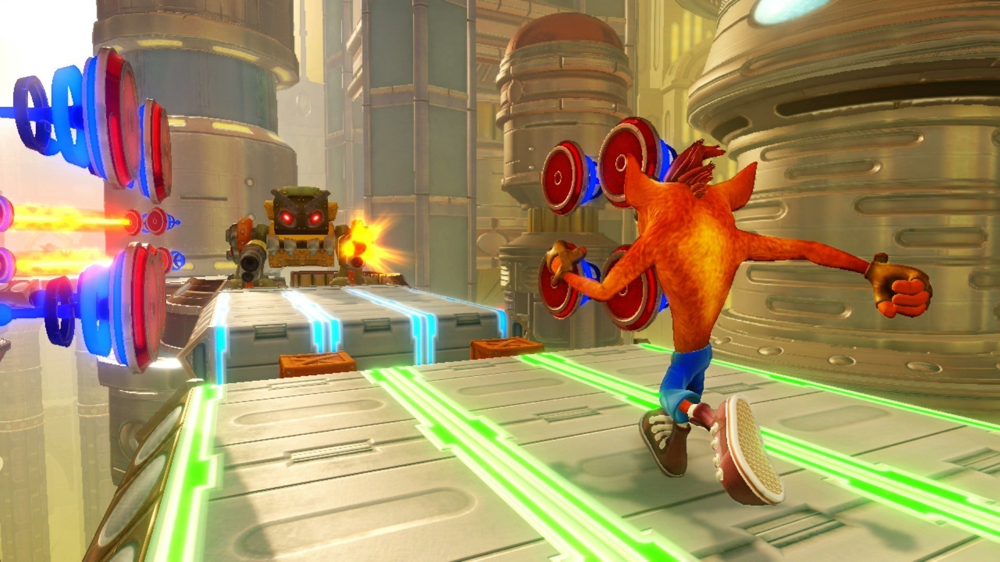
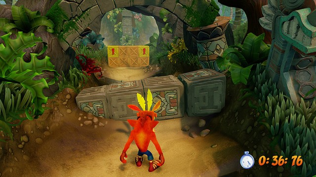
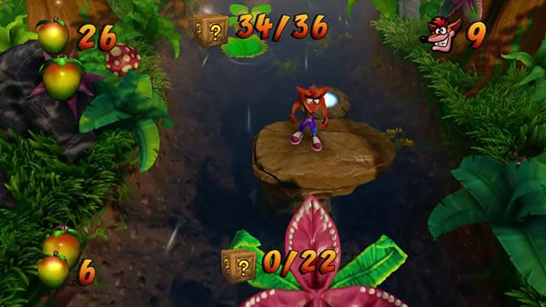
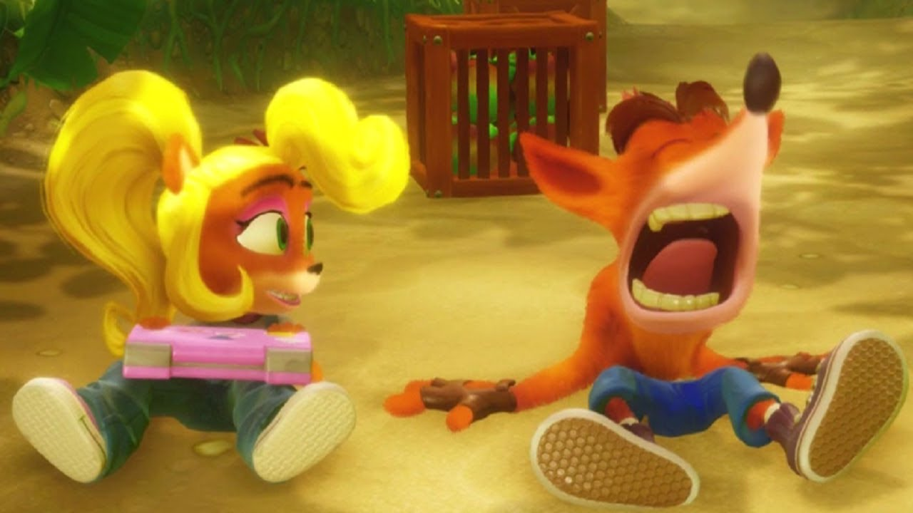
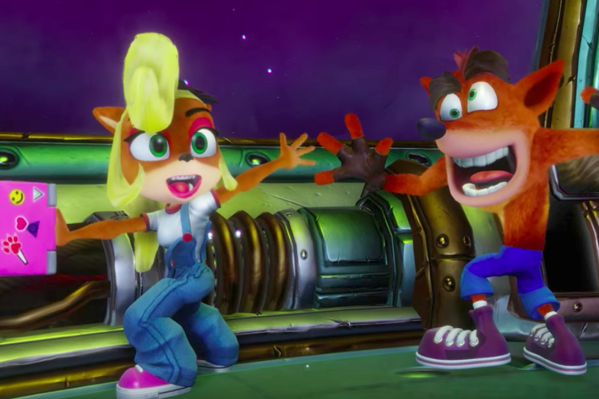
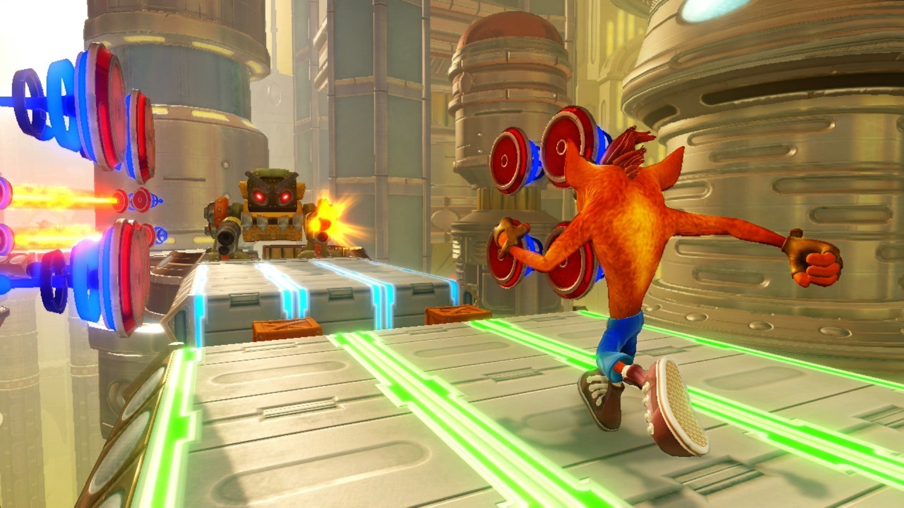
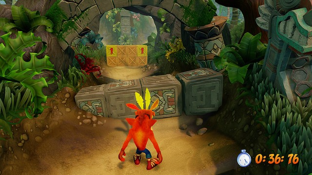
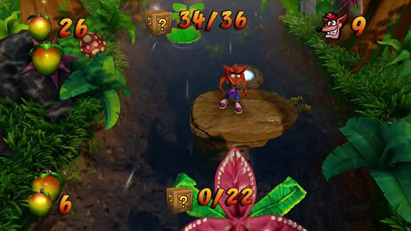
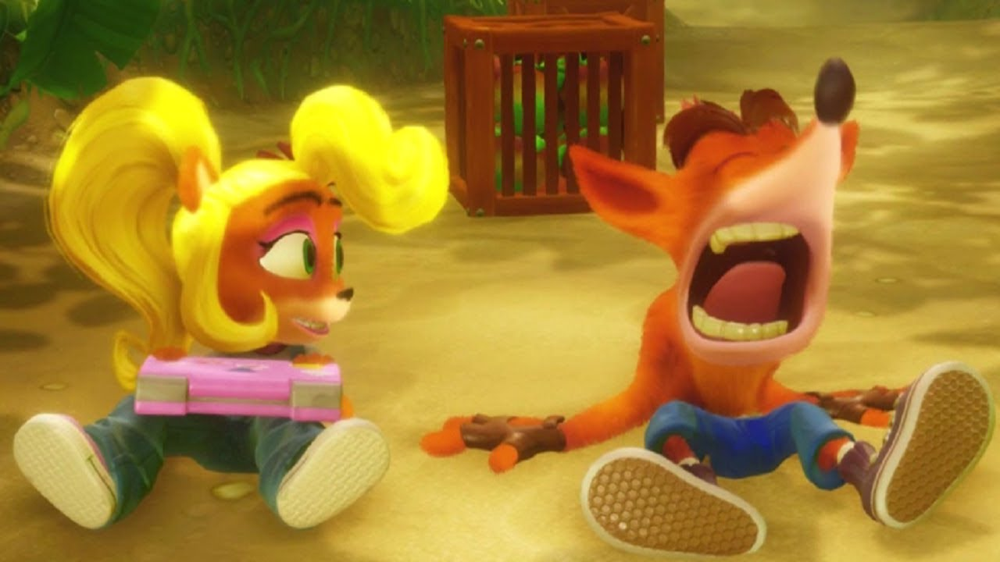
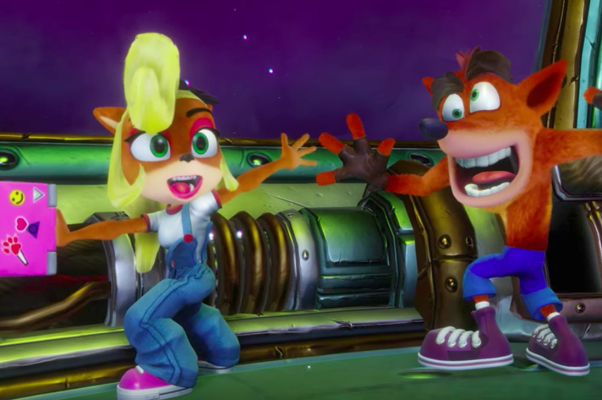

Crash Bandicoot N'Sane Trilogy
Información del juego
Crash Bandicoot N. Sane Trilogy es un videojuego de plataformas desarrollado por Vicarious Visions y publicado por Activision como una exclusiva temporal para la
plataforma PlayStation 4. El videojuego es una colección nueva y mejorada de los tres primeros títulos de la serie Crash Bandicoot:
Crash Bandicoot, Crash Bandicoot 2: Cortex Strikes Back y Crash Bandicoot 3: Warped, que fueron desarrollados originalmente por Naughty
Dog para la consola PlayStation. El videojuego fue lanzado el 30 de junio de 2017 en PlayStation 4, a excepción de Japón donde fue
lanzado el 3 de agosto de 2017. Tuvo una recepción generalmente favorable por parte de los críticos, que elogiaron la fidelidad
de los videojuegos a la trilogía original. En 2019, había vendido más de diez millones de copias en todo el mundo.
El 8 de marzo de 2018, se anunció que el juego estaría disponible para Xbox One, Nintendo Switch y Microsoft Windows. Finalmente, el lanzamiento en estas plataformas se produjo el 29 de junio de 2018.
N. Sane Trilogy es una colección de remakes de los tres primeros videojuegos de la serie Crash Bandicoot (Crash Bandicoot, Crash Bandicoot 2: Cortex Strikes Back y Crash Bandicoot 3: Warped), que cuentan
con el personaje protagonista Crash Bandicoot, un marsupial mutante que debe atravesar varios niveles para detener al malvado Dr. Neo Cortex. Al igual que en los videojuegos originales, Crash utiliza técnicas
de giro y salto para derrotar a los enemigos, romper las cajas y recoger artículos como Frutas Wumpa, vidas extra y la máscara protectora Aku-Aku. La trilogía agrega nuevas
características en los tres videojuegos, incluyendo puntos de control unificados, menús de pausa y sistemas de guardado, incluyendo el
guardado manual y automático, y pruebas contrarreloj, que se introdujeron por primera vez en Warped y cuenta con la posibilidad de jugar
como Coco Bandicoot, la hermana menor de Crash. La trilogía agrega DLCs que contienen dos niveles: Stormy Ascent (Un nivel que fue
eliminado por Naughty Dog del primer videojuego original de la saga por ser muy difícil) y Future Tense, un nivel futurista completamente
nuevo que se incluye cerca del nivel final de Warped.
Reseñas
IGN
Genial
"Las primeras salidas de Crash, que en gran medida resisten mecánicamente la prueba del tiempo, reciben un lavado de cara N. creíble en esta colección."
"No quería que Crash Bandicoot: N. Sane Trilogy rompiera lo que no estaba roto. Afortunadamente, Vicarious Visions claramente tampoco quería hacerlo, y la reverencia
del estudio por los desafíos originales, enloquecedores pero gratificantes, que aún siguen siendo divertidos, está claramente en evidencia. Por un lado, eso lleva a que las frustrantes limitaciones
del Crash Bandicoot original persistan 20 años después. Pero también da como resultado una increíble revisión visual y auditiva y ajustes
en el juego a entradas anteriores, como contrarreloj y contadores de cajas, que Naughty Dog agregó más adelante en la serie.
Esas adiciones hacen que el paquete general sea mucho más cohesivo sin olvidar nunca lo que hizo, y lo que todavía hace, que gran parte de
la trilogía original de Naughty Dog sea una maravilla para jugar."
"8.5 / 10"
Metacritic
Aclamado universalmente
"Basado en 87 reviews de críticas."
"Tan bueno como soñábamos, rehechos respetuosamente a partir de los juegos originales, anticuados pero disfrutables por los jugadores de hoy en día, grandes y pequeños... Activision por fin nos ha dado lo que todo el mundo pedía, y el juego resultante para PS4 tiene todas esas sensaciones, colorido,
escenarios y cosas adictivas que lo hacen destacar entre cualquier otro juego de plataformas. El juego del verano."
"80 / 100"
LevelUp
El marsupial favorito de los 90's está de vuelta
"Crash Bandicoot N. Sane Trilogy es un imperdible para los fans de la serie y nostálgicos de los 90. El tratamiento que Vicarious Visions dio a los juegos es impecable y revitalizante; sin embargo, si nunca has jugado un Crash, quizá lo encuentres frustrante y deficiente.""
Imágenes y capturas del juego
 








